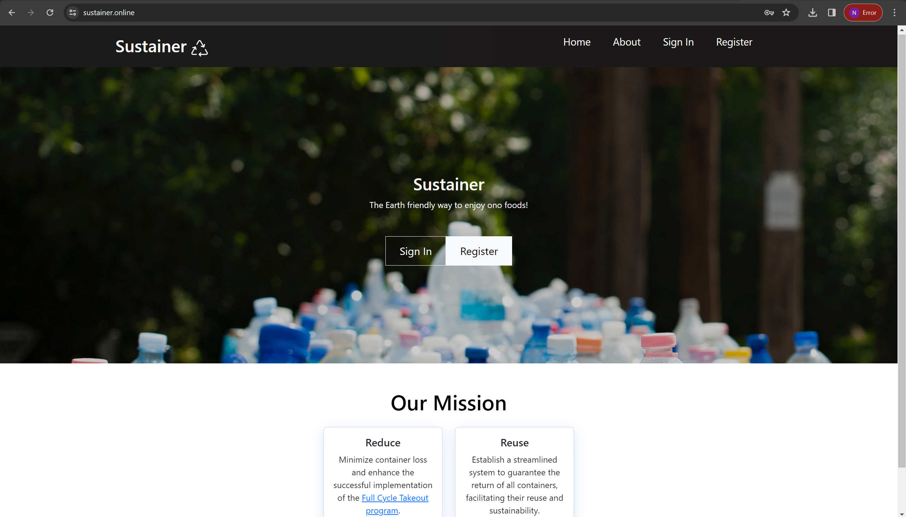

At the 2023 Hawai’i Annual Code Challenge, my team, Bit By Bit, participated in the event and tackled the Reusable Takeout Program App challenge. Our team was proudly chosen as a HACC finalist and presented at the University of Hawai’i West O’ahu.
Single-use takeout containers and food wrappers make up a significant portion—up to one-third—of the debris discovered along Hawai’i’s shorelines. Currently, a reusable takeout container program, Full Cycle Takeout, by Zero Waste Hawai’i, aims to solve this problem by offering vendors and customers the ability to rent out containers. However, between 20% and 30% of reusable containers are not returned, making the program unsustainable financially and for the planet. With more containers needing to be replaced, Zero Waste Hawai’i is looking for a program that incentives users to return containers at large, fast-moving events.
Sustainer is a reusable container tracking app that assists users, vendors, and the non-profit Zero Waste O’ahu in staying accountable for the return of reusable containers at large events. It uses monetary incentives for users to return reusable containers. At events, users will use their phones to sign up for Sustainer, go to their preferred food vendor, scan their unique ID QR code, enjoy their delicious food, and return it! Users are charged $5 per missing container to keep them accountable.
For further details, please visit the Sustainer Organization Page Our deployed appliction can be seen here
Developing this web application was the first time I’ve tackled a software engineering solution in it’s full scope from scratch. My team and I worked together and collaborated throughout the entire process of design, functionality, workflow, data management, aesthetics and deployment to create a cohesive user experience. In a technical context, I’ve gained a lot of experience with the stack used in creating this application and it has given me more confidence in my ability to use meteor and react native in my coding repetiore. Fundamentally, this project has helped me in my skills to do my own research and work with libraries and syntax that I’m completely unfamiliar with which is something I know I will need in the future regardless of what type of software engineering I work in. My role in the team was to create and manage the vendor databases and vendor order pages which keep track of the containers provided by Zero Waste Oahu.